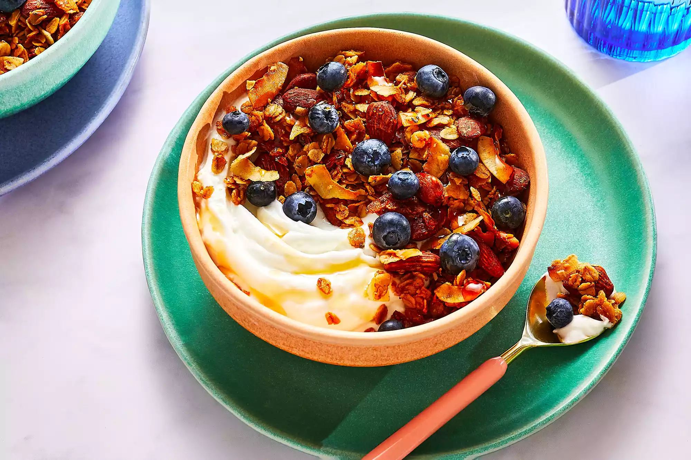

Coconut Granola

Description
Coconut is one of my favorite flavors, and I love its nutty flavor when
toasted. It's a natural pairing with almonds, rolled oats, and warming spices
like cinnamon and cardamom; using coconut oil amps up the flavor even more.
This recipe comes together in a few minutes and will last for several weeks
in a closed container, making it a great make-ahead breakfast option.
Ingredients
- 5 cups rolled oats.
- 2 cups almonds.
- 2 cups unsweetened shredded coconut.
- 1 1/4 cups of maple syrup.
- 1/2 cup coconut oil.
- 1 egg white.
- 2 tbsp chia seeds.
- 1 tsp cinnamon.
- 1 tsp cardamom.
- 1 tsp kosher salt.
Preparation
- Preheat oven to 350 degrees F (175 degrees C). Line two rimmed baking
sheets with parchment paper.
- Combine all ingredients in a large bowl. Use your hands or a wooden spoon
to thoroughly mix. until oats and nuts are well coated. Spread mixture onto
prepared baking sheets in an even layer.
- Bake until golden brown, about 40 minutes. Stir granola and rotate pans
20 minutes into baking time so that it browns evenly.
- Cool completely, then transfer to lidded containers or jars. Store at room
temperature for up to two weeks. Serve with milk, yogurt, or your choice of
fruit.